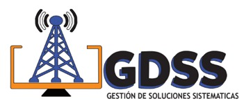

Casos de Éxito y Proyectos
Una muestra visual de nuestros estándares en montajes e infraestructura.



Diseñamos e implementamos redes estructuradas, administración de servidores y soporte técnico especializado con máxima disponibilidad.
Garantizamos la continuidad operativa de tu negocio a través de infraestructuras robustas.
Instalación de cableado estructurado, fibra óptica, segmentación de redes (VLANs) y configuración de equipos como switches y routers CISCO/MikroTik.
Mantenimiento preventivo, correctivo, optimización de sistemas operativos y resolución de fallas de hardware y software al instante.
Despliegue de servidores locales o basados en nubes virtuales, copias de seguridad automatizadas y gestión segura de bases de datos corporativas.
Una muestra visual de nuestros estándares en montajes e infraestructura.
En **GDSS** combinamos experiencia y pasión tecnológica para transformar la infraestructura digital de las empresas. No solo resolvemos problemas informáticos; diseñamos soluciones escalables que previenen caídas de red y potencian el flujo de trabajo de tu equipo.
Nuestro enfoque está alineado con altos estándares de calidad, asegurando que cada nodo de red, servidor o terminal trabaje a su máxima capacidad.
Déjanos tus datos o cuéntanos qué requerimiento tienes para asesorarte de inmediato.
¿Atención inmediata? Escríbenos vía WhatsApp:
💬 Chatear con Soporte Técnico